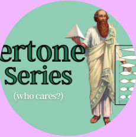
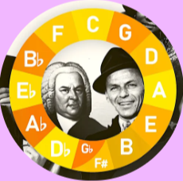
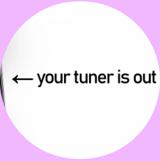
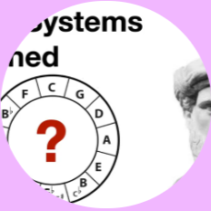
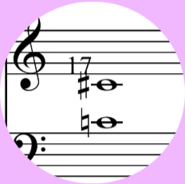

@guitarstringtheory

The Overtone Series - The Foundation of Music Theory
⋮

Songs that use the Circle of Fifths progression
⋮
The Circle of Fifths Explained for Guitar | How to ACTUALLY Understand The Circle of 5ths on guitar
⋮

Why pianos and guitars aren't really in tune (just intonation vs 12TET)
⋮

16. Tuning Systems Explained
⋮
Fit The Fifth - The Beavers Lesson by Lewis Carroll
⋮

Minor diatonic semitone - Wikipedia
⋮
Radiation - Crystal Lattice, Photons, Electrons | Britannica
⋮
Join guitarstringtheory on Linktree